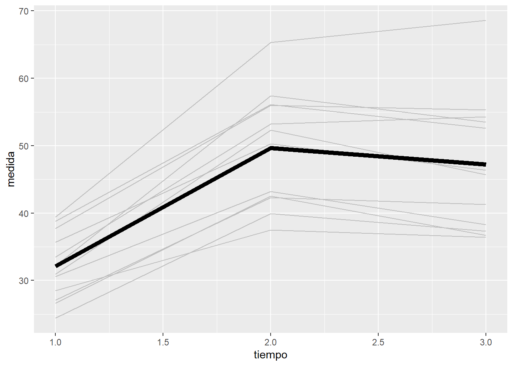

Capítulo 5 Modelos con respuesta normal
En este capítulo se describirán los métodos y modelos estadísticos para analizar medidas respetidas cuando la variable respuesta sigue una distribución normal o gaussiana. Se pueden probar algunas transformaciones, como el logaritmo, para normalizar la distribución de la variable.
5.1 Técnica de la suma de cuadrados
Este método o técnica se basa en la suma de cuadrados. Es la más simple desde el punto de vista estadístico y computacional. Por contra, sólo permite analizar diseños balanceados, sin variables independientes cuantitativas (covariables), sólo cualitativas o factores y con un número limitado de factores que tienen que estar cruzados (no anidados). A continuación se presentan los dos diseños más simples de medidas repetidas que se pueden analizar con esta técnica.
5.1.1 Diseño 1W+1B
Cuando el diseño es balanceado (mismo número de individuos por grupo), las medidas son las mismas para todos los individuos y no hay covariables, se puede usar la técnica de suma de cuadrados o tabla ANOVA.
La notación que se usa para la ecuación del modelo en el contexto de suma de cuadrados es:
\[y_{ijk} = \mu + \alpha_i + \beta_j + \alpha\beta_{ij} + \pi_{k(i)} + e_{ijk}\]
Donde
- \(\mu\) es la constante del modelo,
- \(\alpha_i\), son los efectos del grupo o tratamiento
- \(\beta_j\), son los efectos del tiempo
- \(\alpha\beta_{ij}\) es la interacción del tiempo con el grupo
- \(\pi_{k(i)}\) es el efecto aleatorio del individuo que está anidado al grupo
- \(e_{ijk}\) son los errores
\(\sum_{i=1}^a \alpha_i=0\), \(\sum_{j=1}^b \beta_j=0\), \(\sum_{i=1}^a \alpha\beta_{ij}=0, \forall j\), \(\sum_{j=1}^b \alpha\beta_{ij}=0, \forall i\),
\(\pi_{k(i)} \sim N(0, \sigma_{ind})\)
En este contexto se dice que el tiempo y la interacción tratamiento:tiempo son términos o componentes “intra sujeto” (within subject). Mientras que el grupo es un componente “entre sujeto” (between subject). Por lo tanto, se trata de un diseño 1W+1B.
Las técnicas clásicas de la tabla ANOVA y su inferencia són válidas siempre y cuando se cumpla la condición de esfericidad: la variancia de la diferencia entre dos medidas es constante. Para comprobar la condición de esfericidad se puede aplicar el test de Mauchly.
Si no se cumple hay que corregir los grados de libertad de los términos “intra sujetos” de la tabla ANOVA y se recalculan sus p-valores. Hay dos métodos para corregir los grados de libertad: método “Huynh and Feldt” (H-F) y el método “Greenhouse-Geisser” (G-G) .
5.1.2 Diseño 1W
Si en el diseño no hay grupos, luego el modelo se simplifica a un diseño de un solo factor “intra sujeto” (1W)
\[y_{ij} = \mu + \pi_i + \beta_j + e_{ij}\]
En ambos casos, tanto en el diseño en que tenemos grupos (1W+1B) como en el que no (1W), no nos interesa evaluar el efecto del individuo; ya sabemos que hay variabilidad entre ellos. Veremos en un ejemplo como el paquete ez que se usará para esta técnica de suma de cuadrados omite los resultados sobre el factor aleatorio individuo.
5.1.3 Función ezANOVA
Para ajustar los modelos de medidas repetidas balanceados mediante la técnica de suma de cuadrados existe la función ezANOVA del paquete ez [@R-ez]
library(ez)Tanto la corrección por H-F o G-G, como el test de esfericidad de Mauchly estan implementados en el package ez de R. Para visualizar gráficamente los resultados, se usará la función ezPlot(). Más adelante en esta sección se verá en un ejemplo de ambas funciones. Para llevar a cabo los análisis ANOVA se usa la función ezANOVA () que tiene los siguientes argumentos:
data: base de datos donde se encuentran las variablesdv: variable respuesta o variable dependientewid: variable individuowithin: factor o factores “intra sujeto”. Típicamente en este argumento se espedificará el tiempo. Si se especifica más de un factor, éstos deben estar cruzados y se escribirá.(var1,var2).between: factor o factores “entre sujetos”. Si no hay ningún factor “intra-sujeto” se deja aNULL. Como en el argumentowithin, si hay más de un factor “entre sujetos”, éstos deben estar cruzados y se escribirá.(var1,var2).
Observaciones:
- Los datos deben estar en formato vertical.
- La variable respuesta y los factores deben escribirse sin comillas.
- Los factores “intra”, “entre” y el sujeto deben estar en format
factor. - El factor individuo debe tener tantos niveles como individuos.
- Aunque en teoría la función permite covariables (variables independientes contínuas), esta opción está en versión “beta”.
- Todos los factores, excepto el individuo, deben ser de efectos fijos.
5.2 Respuesta Multivariante
Esta metodología también conocida como MANOVA asume que las observaciones de cada individuo es un vector multivariante donde la variable respuesta se considera dicho vector. Podemos escribirlo de la siguiente forma:
\[\vec{y}_i = \vec{\mu}_i + \vec{e}_i\]
Donde
\(\vec{y_i}=(y_{i1},\ldots,y_{iT})\) es el vector de medidas para el individuo \(i\).
\(\vec{\mu}_i=(\mu_{i1},\ldots,\mu_{iT})\) es el vector con las medias de cada momento y para cada individuo. Las medias pueden depender de las variables independientes \(x_k\). Fíjate que el coeficiente \(\beta_{kj}\) puede ser diferente para cada momento.
\[\mu_{ij} = \sum_{k=1}^K \beta_{jk} x_{ik}, \quad j=1,...,T\]
\(\vec{e_i} \sim N(\vec{0},\Sigma)\), donde \(\Sigma\) es la matrix de covarianzas de los errores y tiene que ser la misma para todos los individuos. Su estructura, pero, puede ser cualquiera.
\(x_{ik}\) valor de la variable independiente \(k\) del individuo \(i\).
Observaciones
Para ajustar este modelo los datos se disponen de forma horizontal.
En este modelo los tiempos en que se toman las \(T\) medidas tienen que ser los mismos para todos los individuos.
Para estudiar la evolución en el tiempo se puede realizar un contraste polinómico en el vector de medias \(\vec{\mu}\).
Para comparar grupos de medidas, por ejemplo si se tienen cinco medidas, las dos primeras corresponden al tratamiento A y las otras tres al tratamiento B, se puede realizar un contraste lineal para comparar los dos tratamientos.
Cuando hay un valor faltante en alguna medida, toda la fila del individuo se tiene que eliminar.
Cada variable independiente, \(x_{ki}\) es un único valor por individuo. O sea, que este modelo no contempla que las variables independientes sean de medidas repetidas. Si tuviéramos una variable que cambiara en el tiempo, se tienen que poner como variables diferentes (una para cada momento).
Los factores contribuyen con tantas dummy variables como categorías menos uno en los términos \(x_{ik}\).
Los términos \(x_{ik}\) pueden ser también interacciones entre variables, como el producto de sus términos.
| indiv | edad | fumador | sexo | fumadorEx | fumadorNunca | edad | sexomujer | fumadorEx:edad | fumadorNunca:edad |
|---|---|---|---|---|---|---|---|---|---|
| 1 | 50 | Ex | mujer | 1 | 0 | 50 | 1 | 50 | 0 |
| 2 | 55 | Actual | mujer | 0 | 0 | 55 | 1 | 0 | 0 |
| 3 | 60 | Actual | hombre | 0 | 0 | 60 | 0 | 0 | 0 |
| 4 | 65 | Nunca | mujer | 0 | 1 | 65 | 1 | 0 | 65 |
| 5 | 62 | Ex | hombre | 1 | 0 | 62 | 0 | 62 | 0 |
5.3 Ejemplos
Vamos a ver algunos ejemplos que se analizarán mediante las técnicas que se acaban de describir.
5.3.1 Ejemplo 1
En la base de datos “Ejemplo_1W.csv” se tienen los datos de un diseño con 12 individuos en los que se toman los niveles en sangre de un cierto parámetro lipídico. Para cada invidivuo se miden los niveles a 1, 2 y 3 horas.
datos <- read.csv2("datos/Ejemplo_1W.csv")Ordenamos por individuo y dentro por tiempo dentro de individuo
datos <- arrange(datos, indiv, tiempo)5.3.1.1 Exploración de los datos
library(ggplot2)
p <- ggplot(data = datos, aes(x = tiempo, y = medida, group = indiv))
p + geom_line(col="grey") + stat_summary(aes(group = 1),
geom = "line", fun = mean, size=2)
Cada línea representa a un individuo, mientras que la línea más gruesa es el promedio de los 12 individuos. Vemos como el efecto del tiempo no es del todo lineal. Además las líneas están bastante separadas indicando variabilidad entre los individuos.
Comprobemos si tenemos algún inviduo con datos faltantes
sum(with(datos, tapply(is.na(medida), indiv, any)))[1] 0Como son datos balanceados, podemos usar ANOVA y MANOVA
5.3.1.2 Suma de cuadrados (ANOVA)
Para ajustar este modelo hay que usar los datos en disposición vertical.
Además, hay que convertir las variables tiempo e indiv a factor.
library(ez)
datos.ez <- datos
datos.ez$tiempo <- factor(datos.ez$tiempo)
datos.ez$indiv <- factor(datos.ez$indiv)
ezANOVA(data=datos.ez, dv=medida, wid=indiv, within=tiempo, detailed = TRUE)$ANOVA
Effect DFn DFd SSn SSd F p p<.05 ges
1 (Intercept) 1 11 66546.801 1892.0589 386.88796 6.390053e-10 * 0.9686088
2 tiempo 2 22 2166.376 264.6244 90.05264 2.542699e-11 * 0.5011210
$`Mauchly's Test for Sphericity`
Effect W p p<.05
2 tiempo 0.4433135 0.01712201 *
$`Sphericity Corrections`
Effect GGe p[GG] p[GG]<.05 HFe p[HF] p[HF]<.05
2 tiempo 0.6423901 5.662497e-08 * 0.6905331 1.998401e-08 *La condición de esfericidad no se cumple dado que el test de Mauchly es significativo. Por lo tanto, hay que corregir los grados de libertad y, en consecuencia, el p-valor del factor tiempo. Después de la corrección, éste sigue siendo significativo.
Observación: Fíjate que los resultados son los mismos que usando la función lm, y anova con la opción test="Spherical":
modelo <- lm(respuesta ~ 1, data=datosh)
anova(modelo,X = ~1, test = "Spherical")Analysis of Variance Table
Contrasts orthogonal to
~1
Greenhouse-Geisser epsilon: 0.5782
Huynh-Feldt epsilon: 0.5895
Df F num Df den Df Pr(>F) G-G Pr H-F Pr
(Intercept) 1 28.573 2 46 8.5891e-09 5.8716e-06 4.9243e-06
Residuals 23 5.3.1.3 Modelo de respuesta multivariante (MANOVA)
Para analizar los datos mediante el modelo de respuesta multivariante hay que disponer los datos de forma horizontal.
datosh <- dcast(datos, indiv ~ paste0("medida_", tiempo),
value.var = "medida" )
datosh indiv medida_1 medida_2 medida_3
1 1 39.4 65.3 68.6
2 2 33.5 53.2 54.3
3 3 27.1 42.3 41.3
4 4 30.9 52.3 45.7
5 5 32.2 57.4 53.5
6 6 26.6 42.5 36.7
7 7 28.5 37.5 36.4
8 8 37.7 56.0 55.3
9 9 35.7 50.3 46.4
10 10 30.6 43.2 38.3
11 11 24.4 39.9 37.3
12 12 38.8 56.1 52.6Para ajustar un modelo de regresión lineal con respuesta multivariante se puede usar la función lm. Y hay que poner la variable respuesta a la izquierda de ~ como una matriz de las tres variables (medida.1, medida.2 y medida.3):
respuesta <- as.matrix(datosh[,c("medida_1","medida_2","medida_3")])
modelo <- lm(respuesta ~ 1, data=datosh)
class(modelo)[1] "mlm" "lm" summary(modelo)Response medida_1 :
Call:
lm(formula = medida_1 ~ 1, data = datosh)
Residuals:
Min 1Q Median 3Q Max
-7.7167 -3.9667 -0.5667 4.0833 7.2833
Coefficients:
Estimate Std. Error t value Pr(>|t|)
(Intercept) 32.117 1.445 22.23 1.72e-10 ***
---
Signif. codes: 0 '***' 0.001 '**' 0.01 '*' 0.05 '.' 0.1 ' ' 1
Residual standard error: 5.006 on 11 degrees of freedom
Response medida_2 :
Call:
lm(formula = medida_2 ~ 1, data = datosh)
Residuals:
Min 1Q Median 3Q Max
-12.167 -7.217 1.633 6.358 15.633
Coefficients:
Estimate Std. Error t value Pr(>|t|)
(Intercept) 49.667 2.456 20.22 4.75e-10 ***
---
Signif. codes: 0 '***' 0.001 '**' 0.01 '*' 0.05 '.' 0.1 ' ' 1
Residual standard error: 8.509 on 11 degrees of freedom
Response medida_3 :
Call:
lm(formula = medida_3 ~ 1, data = datosh)
Residuals:
Min 1Q Median 3Q Max
-10.80 -9.15 -1.15 6.50 21.40
Coefficients:
Estimate Std. Error t value Pr(>|t|)
(Intercept) 47.200 2.867 16.47 4.25e-09 ***
---
Signif. codes: 0 '***' 0.001 '**' 0.01 '*' 0.05 '.' 0.1 ' ' 1
Residual standard error: 9.93 on 11 degrees of freedomPara obtener la matriz de covarianzas de los residuos:
estVar(modelo) medida_1 medida_2 medida_3
medida_1 25.05970 36.58970 42.08727
medida_2 36.58970 72.39879 81.30000
medida_3 42.08727 81.30000 98.60364Y a partir de la matriz de covarianzas, se puede calcular fácilmente la matriz de correlaciones de los residuos:
cov2cor(estVar(modelo)) medida_1 medida_2 medida_3
medida_1 1.0000000 0.8590239 0.8466744
medida_2 0.8590239 1.0000000 0.9622290
medida_3 0.8466744 0.9622290 1.0000000Para obtener los resultados se usa la función anova (?anova.mlm)
anova(modelo, X = ~1, test = "Pillai")Analysis of Variance Table
Contrasts orthogonal to
~1
Df Pillai approx F num Df den Df Pr(>F)
(Intercept) 1 0.945 85.903 2 10 5.035e-07 ***
Residuals 11
---
Signif. codes: 0 '***' 0.001 '**' 0.01 '*' 0.05 '.' 0.1 ' ' 1Los estadísticos disponibles (argumento test) son: “Pillai”, “Wilks”, “Hotelling-Lawley”, “Roy” o “Spherical”.
Con la opcion X=~1 se contrasta si \(\mu_1 = \mu_2 = \mu_3\). En cambio la opción por defecto X = ~ 0, contrasta \(\mu_1 = \mu_2 = \mu_3=0\) que no es de interés.
El término (Intercept) corresponde al efecto del tiempo.
Resultado
Hay efecto del tiempo porque el p-valor < 0.05.
5.3.2 Ejemplo 2
En la base de datos “Ejemplo_1W1B.csv” se tienen los datos de un estudio en el que participan 24 individuos randomizados en dos grupos de tratamiento (trat). Como en el anterior ejemplo, para cada invidivuo se miden los niveles a 1, 2 y 3 horas.
datos <- read.csv2("datos/Ejemplo_1W1B.csv")Como antes, ordenamos por individuo (de 1 a 24) y por tiempo
datos <- arrange(datos, indiv2, tiempo)Fíjate que hay dos variables que codifican al individuo: la variable indiv va de 1 a 12 que son los individuos que hay dentro de cada grupo de tratamiento, mientras que indiv2 va de 1 a 24 que son el total de individuos.
5.3.2.1 Exploración de los datos
datos$trat <- factor(datos$trat, 1:2, c("Control","Tratados"))
library(ggplot2)
p <- ggplot(data = datos, aes(x = tiempo, y = medida, group = indiv2))
p <- p + geom_line(col="grey") + stat_summary(aes(group = 1),
geom = "line", fun = mean, size=2)
p + facet_grid( ~ trat)
Para trat=1, la medida parece que no sube o sube muy poco. Mientras que para trat=2 sube mucho hasta la segunda medida y se estabiliza en la tercera medida. Por lo tanto, parece que sí hay una interacción entre el tiempo y el grupo de tratamiento.
5.3.2.2 Suma de cuadrados (ANOVA)
Para ajustar este modelo hay que usar los datos en disposición vertical.
Como antes hay que convertir las variables tiempo, indiv2 y trat a factor.
library(ez)
datos.ez <- datos
datos.ez$tiempo <- factor(datos.ez$tiempo)
datos.ez$indiv2 <- factor(datos.ez$indiv2)
datos.ez$trat <- factor(datos.ez$trat)
ezANOVA(data=datos.ez,
dv=medida,
wid=indiv,
within=tiempo,
between=trat,
detailed = TRUE)$ANOVA
Effect DFn DFd SSn SSd F p p<.05 ges
1 (Intercept) 1 22 102808.4513 2849.9219 793.63083 9.363797e-19 * 0.9701554
2 trat 1 22 1952.0835 2849.9219 15.06913 8.040878e-04 * 0.3816578
3 tiempo 2 44 1397.0700 312.7422 98.27755 5.878117e-17 * 0.3063929
4 trat:tiempo 2 44 811.8211 312.7422 57.10794 5.921847e-13 * 0.2042582
$`Mauchly's Test for Sphericity`
Effect W p p<.05
3 tiempo 0.5725954 0.002866835 *
4 trat:tiempo 0.5725954 0.002866835 *
$`Sphericity Corrections`
Effect GGe p[GG] p[GG]<.05 HFe p[HF] p[HF]<.05
3 tiempo 0.7005722 1.520842e-12 * 0.7336894 4.932994e-13 *
4 trat:tiempo 0.7005722 1.003472e-09 * 0.7336894 4.400536e-10 *Vemos como se aplican las correcciones sólo en los términos “intra sujeto” que son tiempo y la interacción trat:tiempo, ya que el test de Mauchly es significativo (p-valor < 0.05).
Una vez aplicados las correcciones sobre los grados de libertad, los p-valores cambian aunque las conclusiones son las mismas: tanto el efecto del tiempo como su interacción con el tratamiento son significativos.
ezPlot(data=datos.ez,
dv=medida,
wid=indiv,
within=tiempo,
between=trat,
x=tiempo,
split=trat)
Las conclusiones con la tabla ANOVA corregida (tanto por GG como por HF), se ven claramente en el gráfico de interacción.
5.3.2.3 Modelo de respuesta multivariante (MANOVA)
Para analizar los datos mediante el modelo de respuesta multivariante, como antes hay que disponer los datos de forma horizontal.
datosh <- dcast(datos, indiv + trat ~ paste0("medida_", tiempo),
value.var = "medida" )
datosh indiv trat medida_1 medida_2 medida_3
1 1 Control 34.7 34.8 36.9
2 1 Tratados 39.4 65.3 68.6
3 2 Control 38.7 44.3 44.6
4 2 Tratados 33.5 53.2 54.3
5 3 Control 28.7 32.1 32.4
6 3 Tratados 27.1 42.3 41.3
7 4 Control 30.8 32.4 33.8
8 4 Tratados 30.9 52.3 45.7
9 5 Control 29.9 36.3 34.3
10 5 Tratados 32.2 57.4 53.5
11 6 Control 27.6 27.4 27.6
12 6 Tratados 26.6 42.5 36.7
13 7 Control 24.9 28.0 26.0
14 7 Tratados 28.5 37.5 36.4
15 8 Control 37.7 38.1 35.6
16 8 Tratados 37.7 56.0 55.3
17 9 Control 31.0 33.2 33.0
18 9 Tratados 35.7 50.3 46.4
19 10 Control 25.4 25.3 28.1
20 10 Tratados 30.6 43.2 38.3
21 11 Control 24.8 26.0 29.6
22 11 Tratados 24.4 39.9 37.3
23 12 Control 38.5 40.0 40.4
24 12 Tratados 38.8 56.1 52.6respuesta <- as.matrix(datosh[,c("medida_1","medida_2","medida_3")])
modelo <- lm(respuesta ~ trat, data=datosh)
summary(modelo)Response medida_1 :
Call:
lm(formula = medida_1 ~ trat, data = datosh)
Residuals:
Min 1Q Median 3Q Max
-7.7167 -3.9667 -0.7083 4.1271 7.6417
Coefficients:
Estimate Std. Error t value Pr(>|t|)
(Intercept) 31.058 1.476 21.048 4.57e-16 ***
tratTratados 1.058 2.087 0.507 0.617
---
Signif. codes: 0 '***' 0.001 '**' 0.01 '*' 0.05 '.' 0.1 ' ' 1
Residual standard error: 5.112 on 22 degrees of freedom
Multiple R-squared: 0.01156, Adjusted R-squared: -0.03337
F-statistic: 0.2572 on 1 and 22 DF, p-value: 0.6171
Response medida_2 :
Call:
lm(formula = medida_2 ~ trat, data = datosh)
Residuals:
Min 1Q Median 3Q Max
-12.1667 -6.6396 0.3375 5.2896 15.6333
Coefficients:
Estimate Std. Error t value Pr(>|t|)
(Intercept) 33.158 2.113 15.692 1.98e-13 ***
tratTratados 16.508 2.988 5.524 1.50e-05 ***
---
Signif. codes: 0 '***' 0.001 '**' 0.01 '*' 0.05 '.' 0.1 ' ' 1
Residual standard error: 7.32 on 22 degrees of freedom
Multiple R-squared: 0.5811, Adjusted R-squared: 0.5621
F-statistic: 30.52 on 1 and 22 DF, p-value: 1.495e-05
Response medida_3 :
Call:
lm(formula = medida_3 ~ trat, data = datosh)
Residuals:
Min 1Q Median 3Q Max
-10.8000 -5.9063 -0.6625 5.6250 21.4000
Coefficients:
Estimate Std. Error t value Pr(>|t|)
(Intercept) 33.525 2.310 14.511 9.55e-13 ***
tratTratados 13.675 3.267 4.186 0.000384 ***
---
Signif. codes: 0 '***' 0.001 '**' 0.01 '*' 0.05 '.' 0.1 ' ' 1
Residual standard error: 8.003 on 22 degrees of freedom
Multiple R-squared: 0.4433, Adjusted R-squared: 0.418
F-statistic: 17.52 on 1 and 22 DF, p-value: 0.0003835anova(modelo, X=~1)Analysis of Variance Table
Contrasts orthogonal to
~1
Df Pillai approx F num Df den Df Pr(>F)
(Intercept) 1 0.88537 81.102 2 21 1.326e-10 ***
trat 1 0.83628 53.633 2 21 5.599e-09 ***
Residuals 22
---
Signif. codes: 0 '***' 0.001 '**' 0.01 '*' 0.05 '.' 0.1 ' ' 1Con la instrucción summary, contrasta si la media es diferente entre los dos grupos de tratamiento, y esto lo hace para cada momento por separado.
En la tabla ANOVA, el p-valor de término trat contrasta si el efecto del tiempo es el mismo para los dos tratamientos, o sea, la interacción tratamiento y tiempo, que es lo que nos interesa. Mientras que el término (Intercept) corresponde al efecto marginal del tiempo.
Fíjate qué pasa si no se especifica el argumento X:
anova(modelo)Analysis of Variance Table
Df Pillai approx F num Df den Df Pr(>F)
(Intercept) 1 0.97752 289.829 3 20 < 2.2e-16 ***
trat 1 0.84439 36.176 3 20 2.854e-08 ***
Residuals 22
---
Signif. codes: 0 '***' 0.001 '**' 0.01 '*' 0.05 '.' 0.1 ' ' 1En este caso, el p-valor del tratamiento contrasta si hay diferencias entre tratamientos en alguno de los momentos (hay 3 grados de libertad). Y este contraste no es la interacción entre tratamiento y tiempo.
5.3.3 Ejemplo 3
En un estudio se quieren comparar el efecto de régimen de ejercicio sobre el sobrepeso. Para ello se reclutan 100 personas. A la mitad se le asigna el régimen y al resto se le hacen algunas recomendaciones (grupo control). Se mide el índice de masa corporal justo antes de empezar el estudio (momento basal), y al cabo de 1, 2 y 3 semanas. Como la edad es una variable importante para predecir el IMC también se registra.
Los datos los encontrarás en el fichero “imc.csv”
En este ejemplo, vemos como en algunos de los individuos nos falta alguna medida en a partir de la primera semana. Por este motivo usaremos la técnica de los LMM.
datos <- read.csv2("datos/imc.csv")Nos aseguramos que los datos estén ordenados por individuo y tiempo
datos <- arrange(datos, indiv, tiempo)Recodificamos nuestra variable tratamiento:
datos$tx <- factor(datos$tx, 1:2, c("Control", "Tratados"))
summary(datos) respuesta indiv tiempo edad tx
Min. : 9.80 Min. : 1.00 Min. :0.00 Min. :25.00 Control :200
1st Qu.:27.02 1st Qu.: 25.75 1st Qu.:0.75 1st Qu.:43.00 Tratados:200
Median :30.75 Median : 50.50 Median :1.50 Median :49.00
Mean :30.46 Mean : 50.50 Mean :1.50 Mean :49.03
3rd Qu.:34.60 3rd Qu.: 75.25 3rd Qu.:2.25 3rd Qu.:57.00
Max. :43.70 Max. :100.00 Max. :3.00 Max. :69.00
NA's :50 Comprobemos si tenemos algún inviduo con datos faltantes
sum(with(datos, tapply(is.na(respuesta), indiv, any)))[1] 42Como hay individuos con datos faltantes no podemos utilizar ANOVA o MANOVA y debemos usar modelos más avanzados que veremos más adelante.